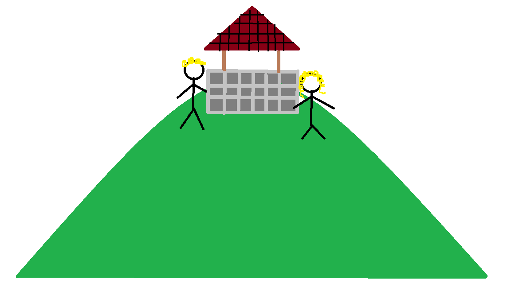

|
Log
Jack and Jill have climbed the Hill and healed 5 hp. |
 |
Instructions
Jack and Jill is a simple nursery rhyme telling the tale of two kids climbing up a hill to fetch a pail of water but ultimately leads to Jack falling down the hill and hurting himself. We are going to turn this nursery rhyme into a really simple game. Jack and Jill start at the bottom of the hill with 10 Hp. Every time they go up the hill they take a quick rest and heal a random amount of health (anywhere between 0 and 5). This can happen even if they are at full health which will cause their health to increase past 10. After their rest, Jack and Jill attempt to bring down a pail of water but end up falling each time taking a random amount of damage (anywhere between 0 and 9). If Jack and Jill fall below 1 hp the game is over. At that point the player can leave, reset the game, or check the highscores. |
|
Hills Climbed
0 |
||
|
Hp
10 |
Buttons
|